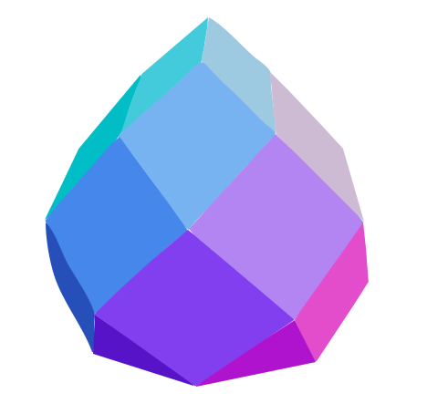

Z
o
oOo
o
mes
N
:
N
M
:
M
HR
:
HR
KR
:
KR
Θ | F
:
deg
rad
tan
mm
cm
m
ZH
:
ZH
TW
:
TW
TT
:
TT
AM
:
AM
GoodKarma
Beveled
Xpansion
VP
:
VP
FF
:
FT
RO
:
RO
Z
o
oOo
o
mes
Z5omes
v1.0.10b06
GLTF
OBJ
STL
PLY
Y⬄Z
S
O
I
T
C
K
L
F
H
←
↑
→
↓
*
/
SVG
PDF
TSV
CSV